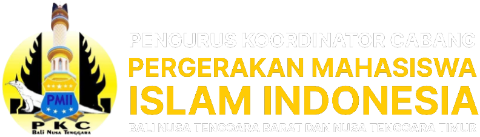
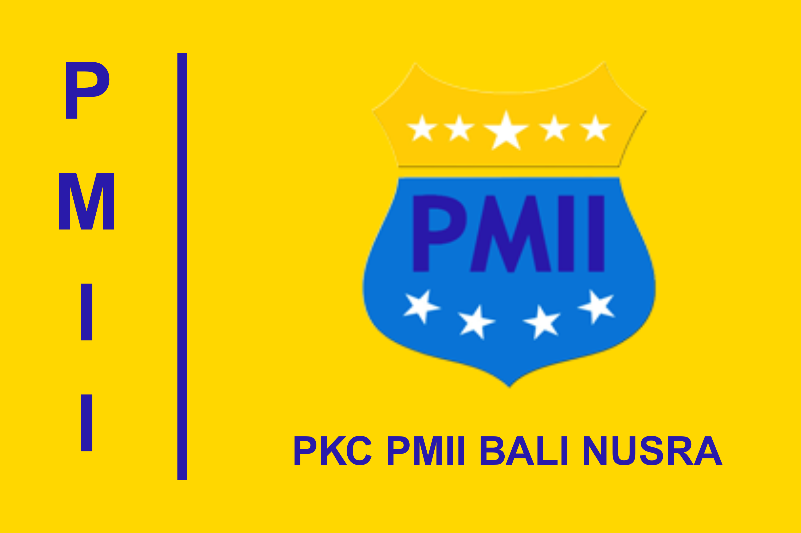

TOTAL
Tingkat Kepengurusan
0+
Pengurus Cabang
Kabupaten atau Kota
0+
Pengurus Komisariat
Kampus atau Institusi
0+
Pengurus Rayon
Fakultas atau Jurusan
TENTANG
Tujuan dan Usaha

-
Tujuan
Terbentuknya pribadi muslim Indonesia yang bertakwa kepada Allah SWT, berbudi luhur, berilmu, cakap dan bertanggung jawab dalam mengamalkan ilmunya serta komitmen memperjuangkan cita-cita kemerdekaan Indonesia.
-
Usaha
Menghimpun dan membina mahasiswa Islam Indonesia sesuai dengan sifat dan tujuan PMII serta peraturan perundang-undangan dan paradigma PMII yang berlaku. Melaksanakan kegiatan-kegiatan dalam berbagai bidang sesuai dengan asas dan tujuan PMII serta mewujudkan pribadi insan ulul albab.
PROGRAM
Agenda Kaderisasi
RILIS
Berita dan Opini
{% for post in site.posts limit:5 %}
{% endfor %}